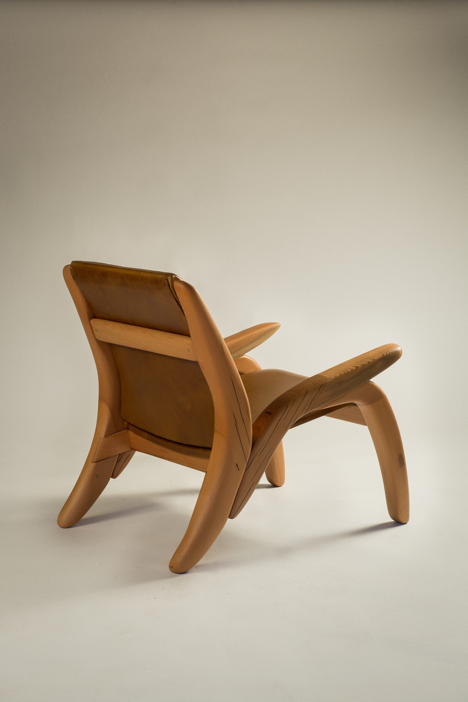
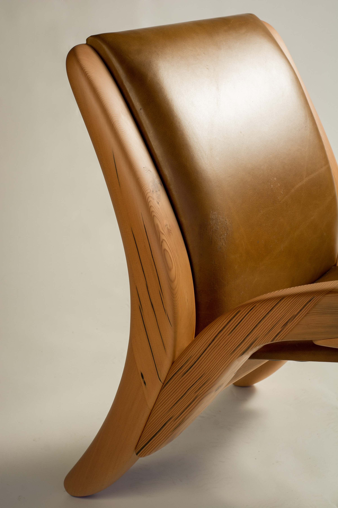
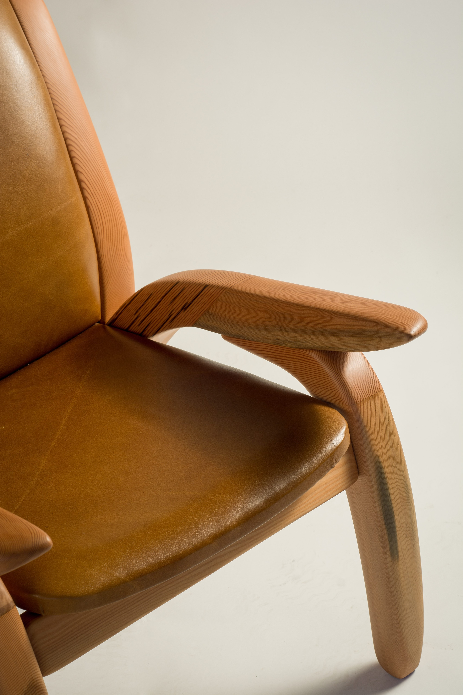

WF03
Lounge Chair
A generous lounge chair balancing visual lightness, tactile detail and an enveloping form.



Interested in this piece or a related commission?
Enquire about WF03


Interested in this piece or a related commission?
Enquire about WF03